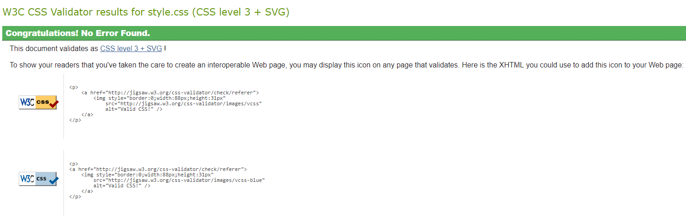

This page contians the critical log detailing the creation of this websites and the challenges and coding techniques encountered in the process
Techniques Used
Different techniques were used in the creation of this website such as HTML5, CSS3 and JavaScript. These were used in conjunction with each other to create the finished website in which these techniques operate together to create the finishes product. HTML was used for most of the main website to get the layout of the website and the contents of the website displayed. External CSS files were used to mitigate the need of using in-line styling as this can make the HTML cluttered as each object will need to be styled individually where as in external CSS style sheets they can be grouped together by ID’s and styled together. JS was used to make a mute button on the website that allowed the user to mute the background video as well as store a variable locally on the user computer that allows it to remember their preference of muting the website, so they do not need to keep doing it every time they switch to a different page or close the website and come back. JavaScript was also used to create a drawing canvas that allowed the user to customise an album cover for a competition.
Challenges Presented
the canvas proved to become quite a problem due to the way I initially coded it as the coordinates did not match up to the cursor position on screen and when the canvas was cleared the cleared the background image of the whiteboard would be deleted and the user’s image would return when the canvas was clicked again due to stored variables in the website. Another problem I faced was the websites scaling as when the website was shrunken it would collapse in on itself instead of zooming in and resizing all elements of the page accordingly. The JavaScript also caused some challenges due to me initially only using one JavaScript file connected to all the webpages, this caused issues as pages that did not contain the canvas would not fire the ‘init’ function due to the JavaScript presenting an error when the canvas code was reached, and no canvas was present. This was later fixed by using multiple JavaScript files of which did not contain the canvas script as it was not necessary in the other pages.
Interoperability
The website has been tested on multiple browsers and tweaked accordingly to work as intended on all of the browsers, it has currently been tested on Firefox, google chrome, Microsoft edge and opera and is working as intended in all of the aforementioned browsers. The website is also viewable on mobile devices and works well but smaller devices suffer due to the layout of the webpage and the number of elements and information that need to be condensed when zooming into the page more than the default amount.
Web standards, HTML and CSS validation
web standards were created to promote an open web that is available on as many devices as possible to ensure that users are not restricted from viewing sites due to their devices. The advantages of web standards include the ability to create a website that will run on most browsers with relative ease instead of having o create the same site specially for multiple different browsers. Web standards are generally a good thing to consider and use however they still have disadvantages such as older browsers and machines not being able to support the newer web standards causing them to receive an unsatisfactory experience when using a new website on an older and unsupported browser.
index.html
demo.html
critical-log.html
tour.html
style.css

Conclusion
In conclusion the website that has been created uses a wide range of techniques and web standards to ensure that it is compatible and works as intended on the majority of web browsers as to ensure a satisfactory user experience whilst not degrading their experience by catering to older browsers that are not widely used anymore due to the negative affect this will have on performance.